Glacier and Glaciated Landscape#
Glacier Modelling part – Guillaume Jouvet#
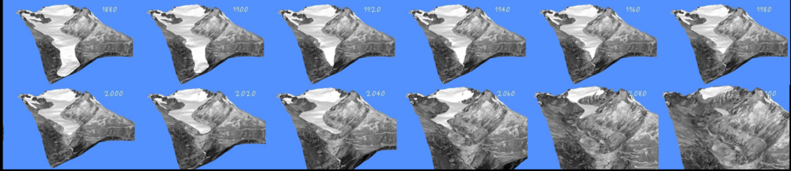
Sub-Course objectives#
Provide the basics of glacier processes
Introduce numerical methods to model glacier evolution
Perform practical numerical experiments on your own glacier (min-project) from the little ice age to the future
Course format: 3 afternoons × 4 hours + 1 extra#
Hour 1 |
Hour 2 |
Hour 3 |
Hour 4 |
|
|---|---|---|---|---|
Week 1 |
Glacier processes |
Glacier modelling |
Tutorial |
Glacier selection |
Week 2 |
Intro to IGM, past & future runs |
Project |
Project |
Project |
Week 3 |
Extra experiments, report |
Project |
Project |
Project |
(Week 4 |
dates and rate add-on |
G. King’s course |
Project |
Project) |
Session 1 — Lecture 1a: Glacier processes#
Today (Session 1)#
Hour 1 |
Lecture 1a: Glacier processes, basics |
Hour 2 |
Lecture 1b: Glacier modelling, basics |
Hour 3 |
Set up RenkuLab (≈ 15 min), + Tutorial: a simple glacier model |
Hour 4 |
Choose your glacier for the mini-project |
Recommended External resources#
Excellent website covering glacier processes in depth: https://www.antarcticglaciers.org
IGM documentation: https://igm-model.org
Main processes governing glacier evolution#
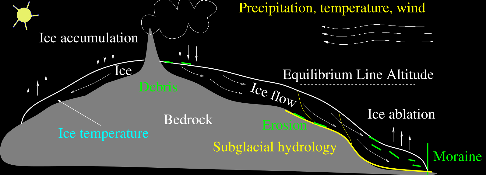
Glacial processes#
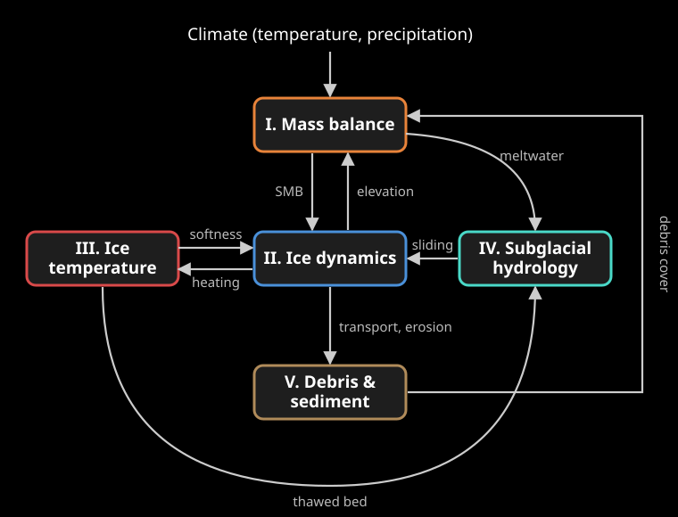
I. Mass balance
II. Ice dynamics
III. Ice temperature
IV. Subglacial hydrology
V. Debris and sediment transport
➡️ All processes are coupled
I. Mass balance#
Mass balance processes#

Surface mass balance (SMB) and the ELA#
Accumulation: snowfall (+ avalanches, wind drift, refreezing)
Ablation: melt (mostly), sublimation, calving
SMB = accumulation − ablation, in m of ice (or water) equivalent per year
Equilibrium Line Altitude (ELA): elevation where SMB = 0
above: accumulation area (SMB > 0)
below: ablation area (SMB < 0)
In the Alps today, ELA ≈ 3000–3300 m; during the Little Ice Age (~1850), ≈ 100–200 m lower
More: https://www.antarcticglaciers.org/glacier-processes/mass-balance/introduction-glacier-mass-balance/
SMB primarily depends on altitude#

Modelling SMB: two families#
Elevation-based (simplest): SMB depends linearly on elevation, with an ELA and two gradients (ablation / accumulation) $\( SMB(z) = \beta\,(z - z_{ELA}), \qquad \text{capped at } b_{max}\)$
Climate-based (temperature-index / positive degree-day): melt ∝ positive temperatures, accumulation = solid precipitation $\( SMB = \underbrace{P_{solid}}_{\text{accumulation}} - \underbrace{f_{melt}\sum \max(T - T_{melt},0)}_{\text{melt}}\)$
We will use both in IGM.
Calving processes#
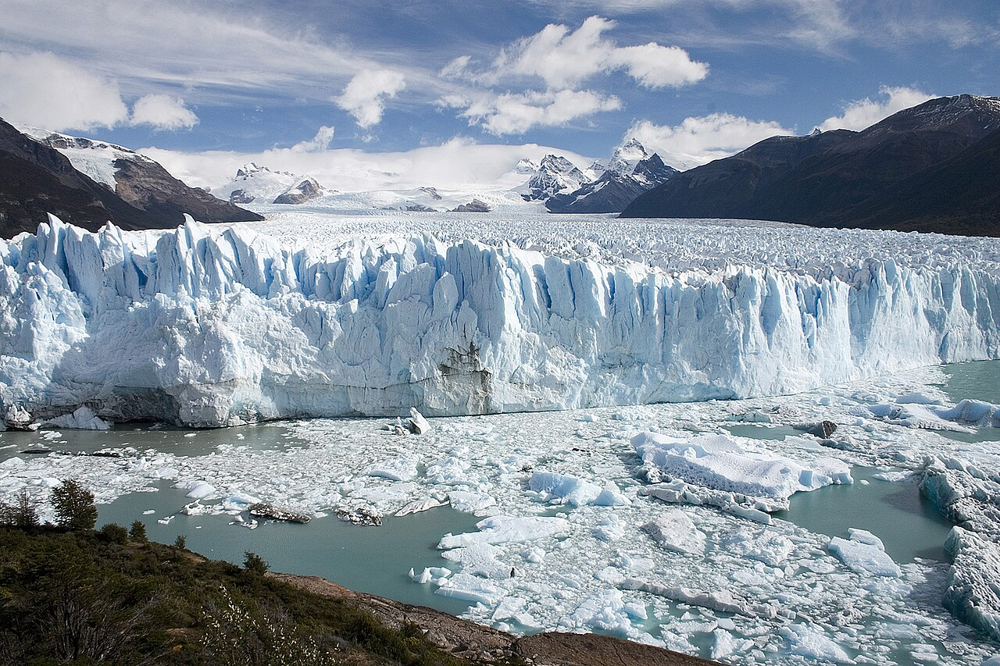
Glaciers ending in water lose ice blocks at the front: calving
Dominant in Greenland, Antarctica, Patagonia (here: Perito Moreno)
In the Alps: minor, and not modelled in our mini-project
Photo: Luca Galuzzi, 2005, CC BY-SA 2.5, Wikimedia Commons. More: https://www.antarcticglaciers.org/glacier-processes/calving/
II. Ice dynamics#
Observing glacial motion#
Timelapse cameras have captured glacial motion:
How can a glacier flow? Brief historical outline#
How could ice remain in a warm green valley without melting?
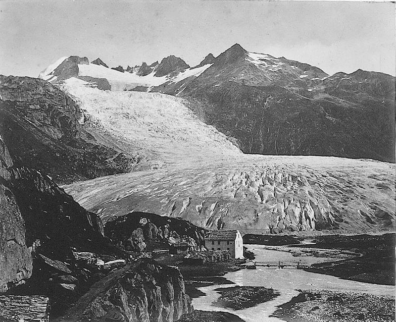
Rhone Glacier in 185618th century: first theories (Rémy et al., 2006)
1705: Dilation of water refreezing (Scheuchzer)
1760: Basal sliding (Gruner)
1773: Ice behaves as a “fluid” (Bordier)
19th century: first measurements#
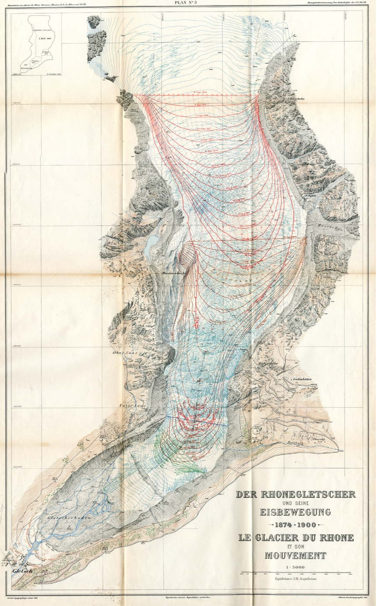
Ice movement of Rhone Glacier 1874–1900 (Mercanton, 1916)
➡️ Ice deformation is faster in the center and slower at the sides
20th century: from lab experiments to Glen’s flow law#
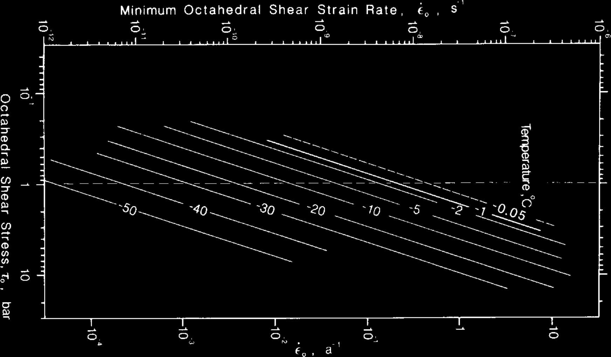
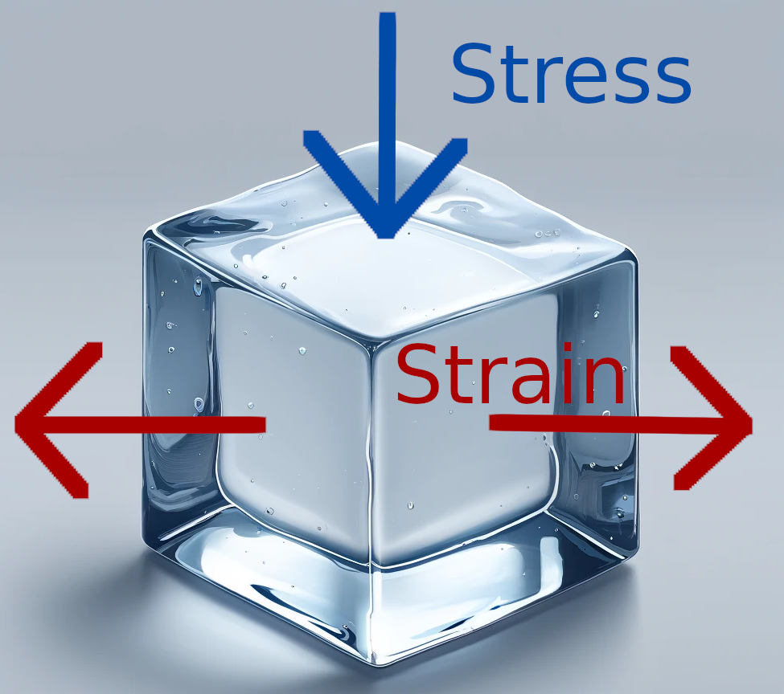
Figure from (Budd & Jacka, 1989)
1D: \(\dot\epsilon = A(T)\,\sigma^n\), where \(\dot\epsilon\) is the strain rate, and \(\sigma\) is the stress.
3D: \(\dot\varepsilon_{ij} = A(T)\,[\sigma^{(d)}_{II}]^{n-1}\,\sigma^{(d)}_{ij}\) ➡️ Ice is a non-Newtonian fluid (J. Glen, 1958)
The two components of glacier ice flow#
Ice is both: a fluid that flows/shears, and a solid that slides
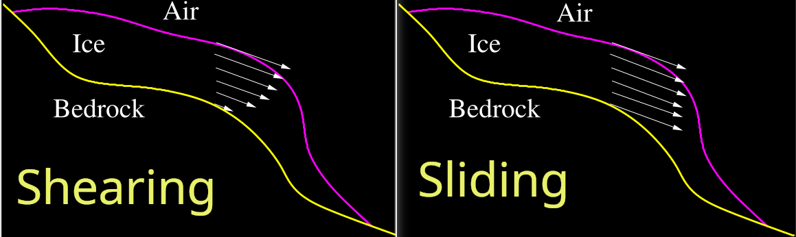
Sliding of ice under Argentière Glacier#
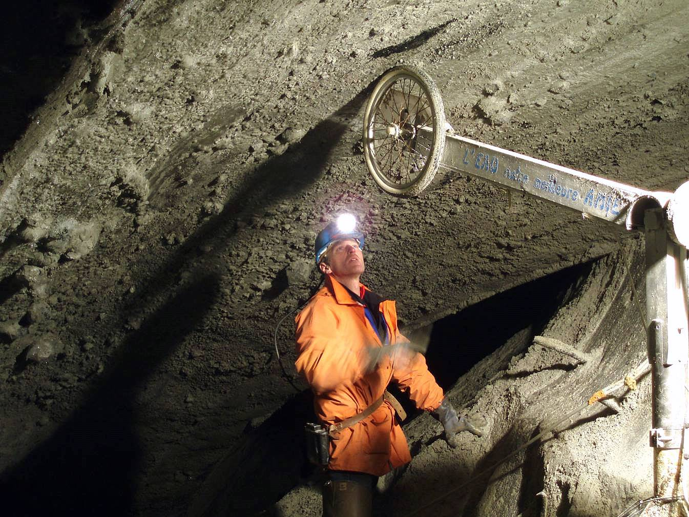
Source: Luc Moreau
III. Ice temperature#
Thermal regime: cold, temperate, polythermal#
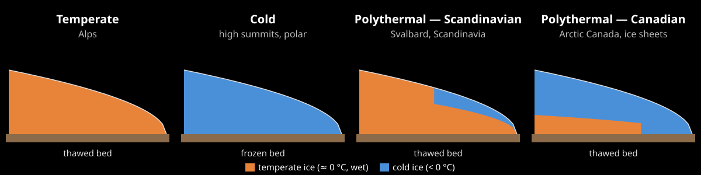
Temperate: ice at the pressure melting point (≈ 0 °C) ➡️ most Alpine glaciers
Cold: ice < 0 °C, frozen to the bed ➡️ high summits (> ~4000 m), polar regions
Polythermal: Scandinavian (cold surface) or Canadian (temperate basal layer)
Why ice temperature matters#
Warm ice is softer: at −10 °C, ice is ≈ 7× stiffer than at 0 °C (Glen’s \(A(T)\))
A glacier slides only on a thawed bed (no sliding, little erosion when frozen)
Heat sources: air temperature, geothermal flux, deformation and sliding friction
➡️ For temperate Alpine glaciers, a constant \(A\) is a good first approximation (our choice in IGM)
Thermal and basal glacial state#
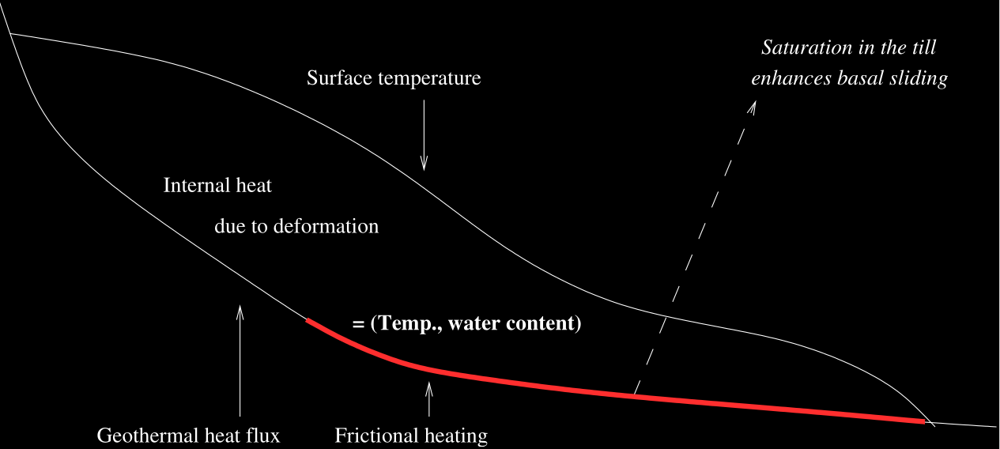
IV. Subglacial hydrology#
Subglacial hydrology#

Inefficient drainage → high water pressure → high basal sliding
Efficient drainage → low water pressure → low basal sliding
Source: https://www.antarcticglaciers.org
V. Debris and sediment transport#
Debris sources and transport#
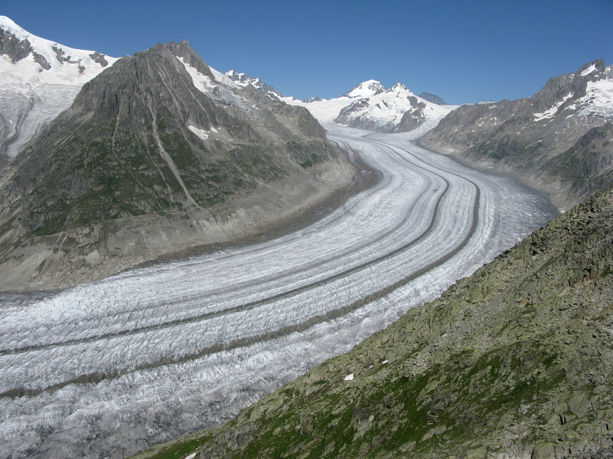
Sources: rockfall, avalanches, bed erosion
Transport: on, inside, and under the ice
Medial moraines: where flow units merge
Moraines record past extents (e.g. Little Ice Age)
Medial moraines of the Great Aletsch Glacier
Debris-covered glaciers#
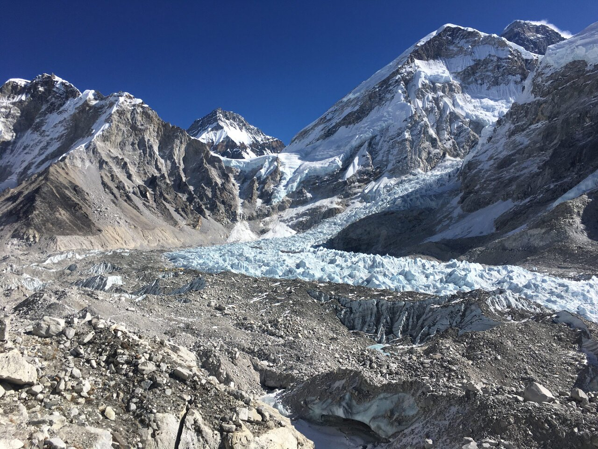
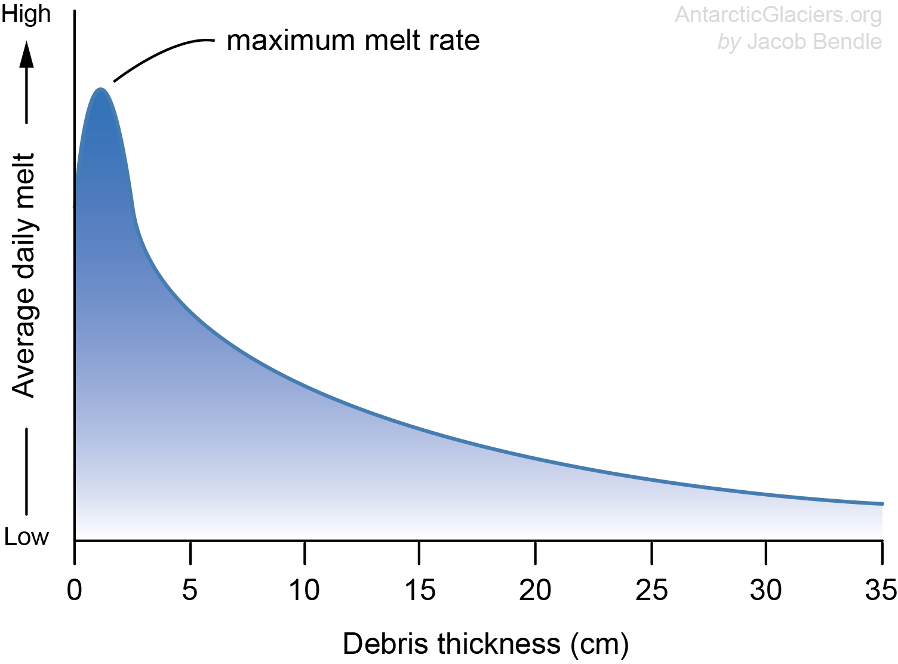
Thick debris ➡️ less melt
Debris expands as glaciers retreat
Khumbu, Nepal. Figures: antarcticglaciers.org
Glacial erosion#
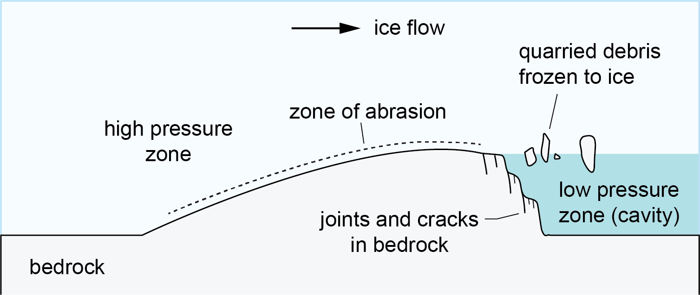
Abrasion (upstream) and quarrying (downstream) ➡️ roche moutonnée
Needs a thawed bed and sliding
➡️ U-shaped valleys, overdeepenings, landscape evolution (Session 4)
Figure: antarcticglaciers.org
Glacier response to climate#
A change in climate (ELA) changes the SMB immediately
The glacier geometry adjusts slowly, through ice flow
Response time: time needed to reach a new equilibrium after a step change in climate, roughly $\(\tau \approx \frac{H}{-b_{terminus}}\)\( (\)H\(: typical thickness, \)b_{terminus}$: SMB at the terminus)
➡️ decades for small glaciers, a century or more for large ones
Consequence: today’s glaciers are not in equilibrium with today’s climate — they will keep retreating even without further warming